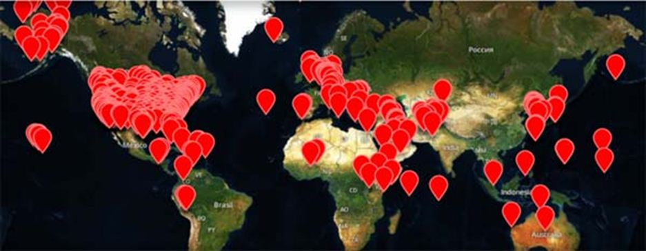

Comme si elle avait les vertus d'un exorcisme incantatoire, une véritable litanie inonde les médias occidentaux. La Russie, dit-on, est une menace pour l'Occident, un péril mortel pour ses intérêts, un ferment corrosif pour ses valeurs. Insensible à la diplomatie, cette puissance aux allures de brute épaisse ne comprend que la force. Hermétique à la négociation, elle est totalement imperméable au code de conduite des nations civilisées. Il faut regarder la réalité en face, et cesser de croire que la Russie a changé, qu'elle n'est pas la réplique d'une URSS dont elle charrie le sinistre héritage. Si l'on veut s'opposer aux ambitions effrénées de l'ogre russe, inutile d'y aller par quatre chemins : il faut réarmer au plus vite et se préparer au pire.
Résumé bêtifiant de tous les lieux communs de l'atlantisme vulgaire, ce discours belliciste n'est pas qu'un discours. Il y a aussi des actes, et ils sont lourds de signification. Les USA ont installé chez leurs vassaux d'Europe orientale un bouclier antimissile qui fait peser sur Moscou la menace d'une première frappe et rend caduc tout accord de désarmement nucléaire. L'OTAN multiplie les manœuvres conjointes aux frontières occidentales de la Fédération de Russie, de la Mer Baltique à la Mer Noire. Colossal, le budget militaire US représente la moitié des dépenses militaires mondiales. En pleine expansion, il équivaut à neuf fois celui de la Russie. A l'évidence, l'essentiel des dépenses nouvelles vise à développer une capacité de projection des forces à l'extérieur, et non à défendre des frontières que personne ne menace.
Troupes de l’OTAN en Estonie
Dans un monde régi par un minimum de rationalité, ces réalités géostratégiques devraient suffire à couvrir de ridicule les gogos de droite et de gauche qui avalent la propagande antirusse comme on boit du petit lait. Mais les idées les plus stupides ont la vie dure, et il y a encore des semi-habiles pour croire que la Russie est une puissance impérialiste au même titre que les Etats-Unis d'Amérique. Si l'impérialisme désigne l'attitude consistant pour une grande puissance à imposer de gré ou de force son hégémonie à d'autres puissances, on se demande en quoi la politique russe relève de cette catégorie. Où sont les Etats envahis ou menacés par la Russie ?
L'Ukraine est en proie à une crise intérieure gravissime consécutive au coup d'Etat qui a porté au pouvoir une clique ultra-nationaliste dont la politique n'a cessé d'humilier la population russophone des régions orientales. C'est cette provocation délibérée des autorités usurpatrices de Kiev, soutenues par des groupes néo-nazis, qui a poussé les patriotes du Donbass à la résistance et à la sécession.
Des soldats américains s'entraînent avec des batteries de missiles Patriot sur une base de l'Otan en Pologne
Mais aucun char russe ne foule le territoire ukrainien, et Moscou a toujours privilégié une solution négociée de type fédéral pour son grand voisin. En témoignent les accords de Minsk I et II, qui ont été bafoués par le gouvernement ukrainien, et non par celui de la Russie. Aujourd'hui, la seule armée qui tue des Ukrainiens est celle de Kiev, cyniquement portée à bout de bras par les puissances occidentales pour intimider Moscou.
Dans toute cette région, c'est l'Occident qui défie outrageusement la Russie à ses frontières, et non l'inverse. Que dirait-on à Washington si Moscou menait des manœuvres militaires conjointes avec le Mexique et le Canada, et encourageait à coups de millions de roubles la déstabilisation de l'Amérique du Nord ?
300 paras américains, mais aussi 75 instructeurs anglais et 200 soldats canadiens ont été envoyés en Ukraine
Soldats américains en Lituanie
Que le terme d'impérialisme s'applique à la politique US, en revanche, ne fait pas l'ombre d'un doute. Elle est d'ailleurs revendiquée par Hillary Clinton qui vient de rappeler que les USA sont « la nation indispensable du monde », un « pays exceptionnel, champion inégalé de la liberté et de la paix », qui montre le chemin à ces peuplades innombrables qui n'ont pas le bonheur d'être américaines, mais qui savent se montrer reconnaissantes à l'égard de leur sauveur à la bannière étoilée. « Les peuples du monde nous regardent et nous suivent. C’est une lourde responsabilité. Les décisions que nous prenons, ou que nous ne prenons pas, affectent des millions de vies. L’Amérique doit montrer le chemin », proclame la candidate démocrate. On imagine la teneur des commentaires si M. Poutine avait affirmé urbi et orbi que la Russie doit guider le monde et sauver l'humanité.
Mais c'est l'Amérique, et elle a une « destinée manifeste ». Investie d'une mission civilisatrice à vocation planétaire, l'Amérique est le nouvel Israël, apportant la lumière aux nations confites d'émotion et saisies d'admiration devant tant de bonté.
Pour le cas où l'enthousiasme des vassaux viendrait à mollir, toutefois, la présence de 725 bases militaires US à l'étranger devrait probablement suffire à y remédier et à entraîner malgré tout l'adhésion des populations récalcitrantes. 725 bases militaires : un chiffre froid et objectif qui donne un minimum de consistance matérielle à ce joli mot d'impérialisme dont abusent les amateurs en géopolitique lorsqu'ils l'attribuent à la Russie de Vladimir Poutine. Car la Russie, elle, n'a pas 725 bases militaires hors de ses frontières. Précisément, elle en a 2, ce qui fait une sacrée différence. La première base est au Kazhakstan, pays allié et limitrophe de la Russie, dont 40 % de la population est russophone. La seconde est en Syrie, près de Lattaquié, installée en 2015 à la demande expresse d'un Etat souverain soumis à une tentative de déstabilisation pilotée depuis l'étranger.

Bases américaines dans le monde
Il est amusant de constater que l'accusation d'impérialisme proférée contre la Russie est une ânerie partagée par ces officines de propagande quasi-officielles de l'OTAN que sont les médias français et par des groupuscules gauchistes qui ne sont décidément pas guéris des pustules de leur maladie infantile. Vieille répartition des tâches, au fond, dont il y a d'autres exemples. Ce sont les mêmes groupes qui s'imaginent défendre la cause palestinienne tout en soutenant les mercenaires wahhabites en Syrie, lesquels servent surtout de piétaille à l'OTAN et de garde-frontière à l'entité sioniste. Mais demander à ces benêts de comprendre ce qui se passe au Moyen-Orient relève sans doute du vœu pieux, la réalité concrète ayant manifestement perdu à leurs yeux le privilège que Marx lui reconnaissait. « L'impérialisme russe », cette bouteille à l'encre d'un atlantisme presque séculaire, finira sans doute au cimetière des idées reçues, mais il se peut qu'elle continue un certain temps à empoisonner les esprits faibles.
En attendant, c'est plus fort que lui, le « pro-Russe » n'en démord pas. Obstiné, il tient à ses chimères. Il croit par exemple que celui qui envahit des pays lointains est impérialiste, tandis que celui qui défend ses frontières ne l'est pas. Il pense que celui qui utilise les terroristes pour semer le chaos chez les autres est impérialiste, et non celui qui les combat à la demande d'un Etat allié. Il a la naïveté de penser que le respect de la loi internationale s'applique à tout le monde, et pas seulement aux pays faibles comme l'Irak, la Libye et la Syrie. Dans son incroyable candeur, il juge absurde le reproche fait à la Russie d'annexer la Crimée quand 95 % de sa population le demande, alors même que ses accusateurs ont poussé le Kosovo à la sécession. Têtu pour de bon, le « pro-Russe » préfère un monde multipolaire à ce champ de ruines que la fureur néo-conservatrice d'une Hillary Clinton va continuer à répandre si le complexe militaro-industriel et le lobby sioniste réussissent, comme d'habitude, à imposer leur poulain à la tête de la première puissance militaire mondiale.